5. September 2026
1. Tag: Mit der Fähre nach Bornholm
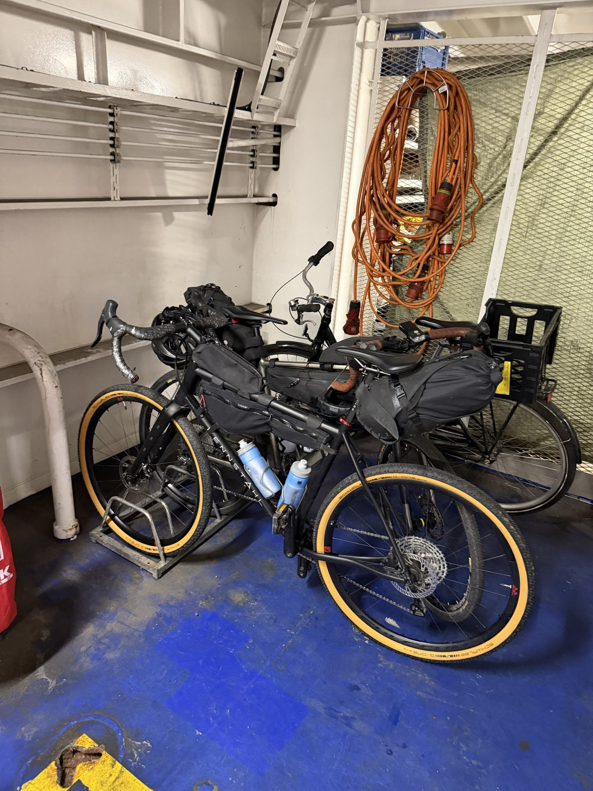
Der erste Tag unserer Radreise rund um Bornholm: Nicki und ich sind mit dem Gravelbike von Rügen aus losgefahren, ab Fährhafen Sassnitz. Die Überfahrt dauerte etwa dreieinhalb Stunden.
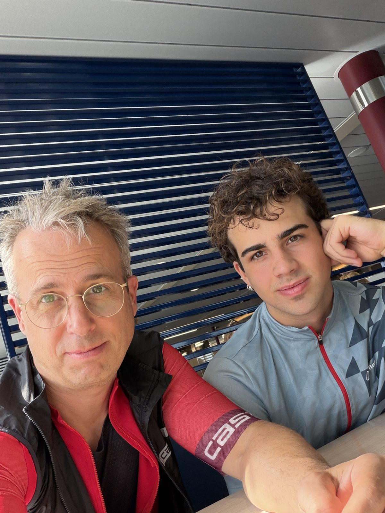
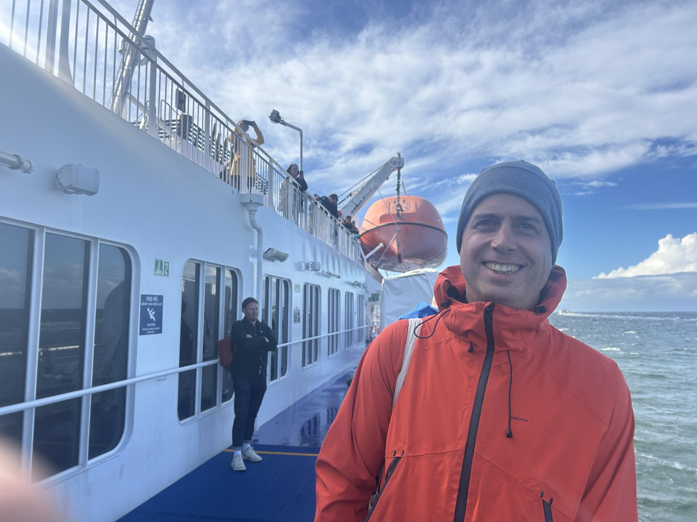
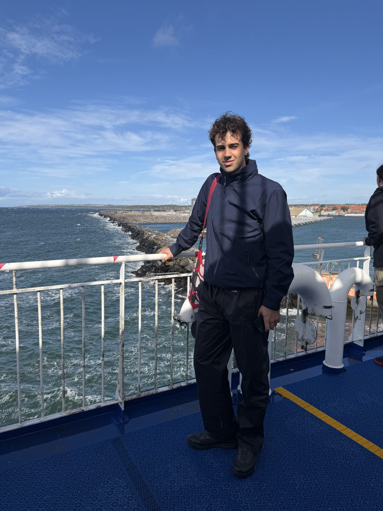
In Rønne angekommen, ging es von dort aus knapp 50 km bis nach Nexø im Osten der Insel. Eine wunderschöne Fahrt – kein Regen, viel Sonne, und der Wind war unser Freund: Rückenwind den ganzen Weg.
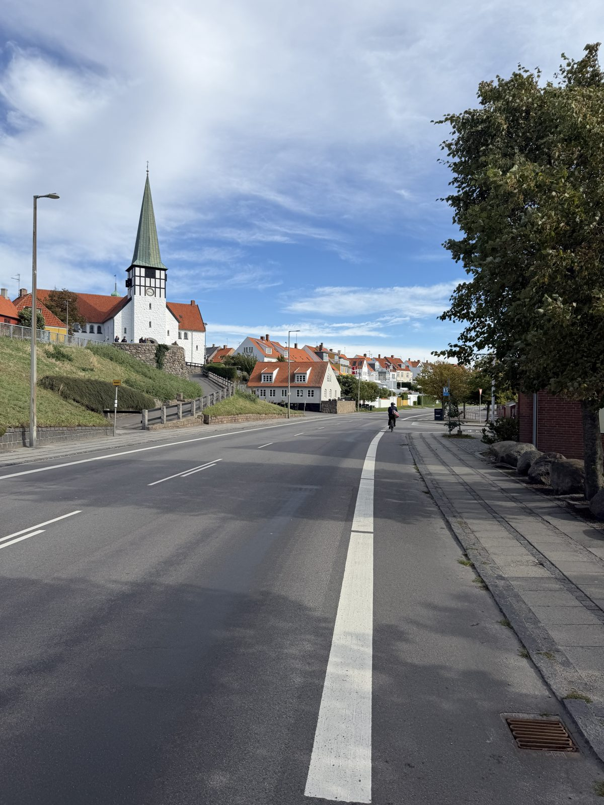
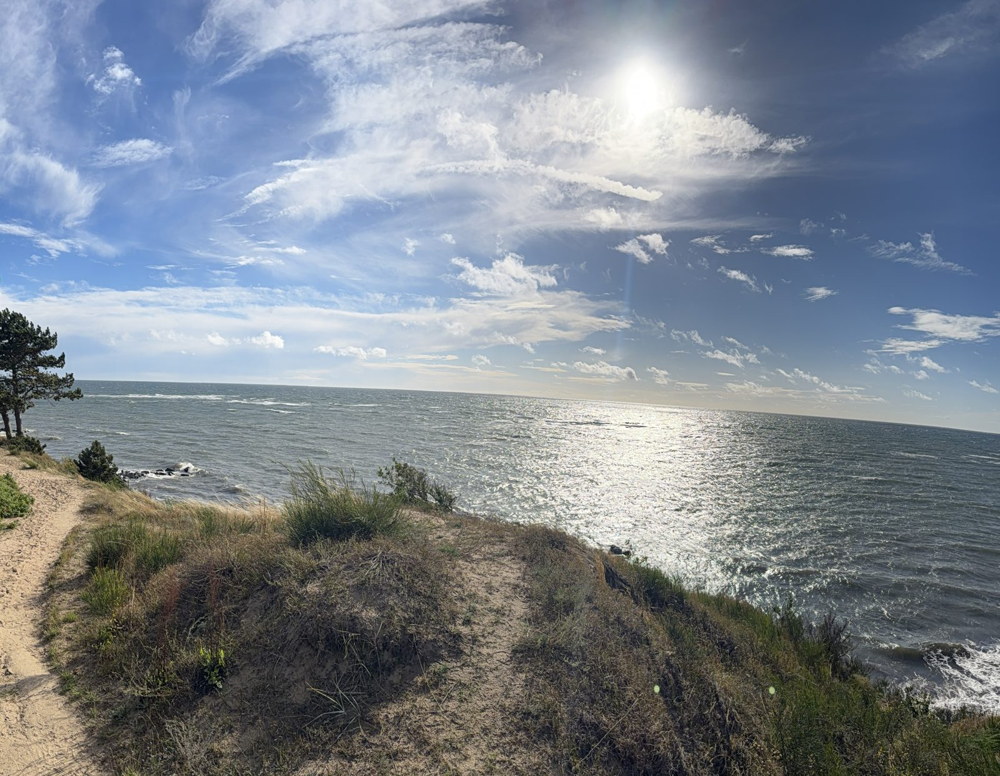
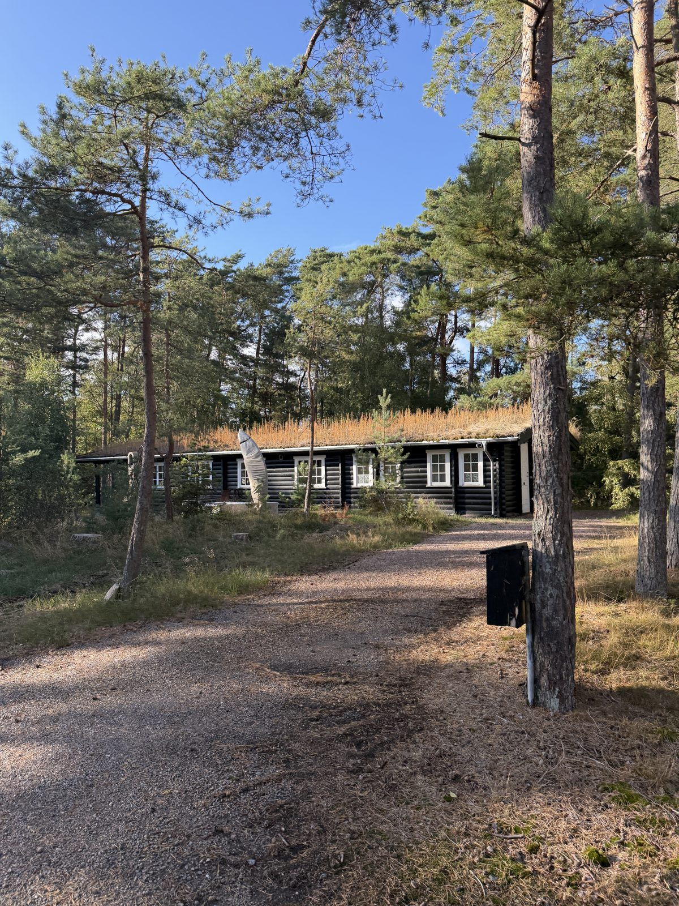
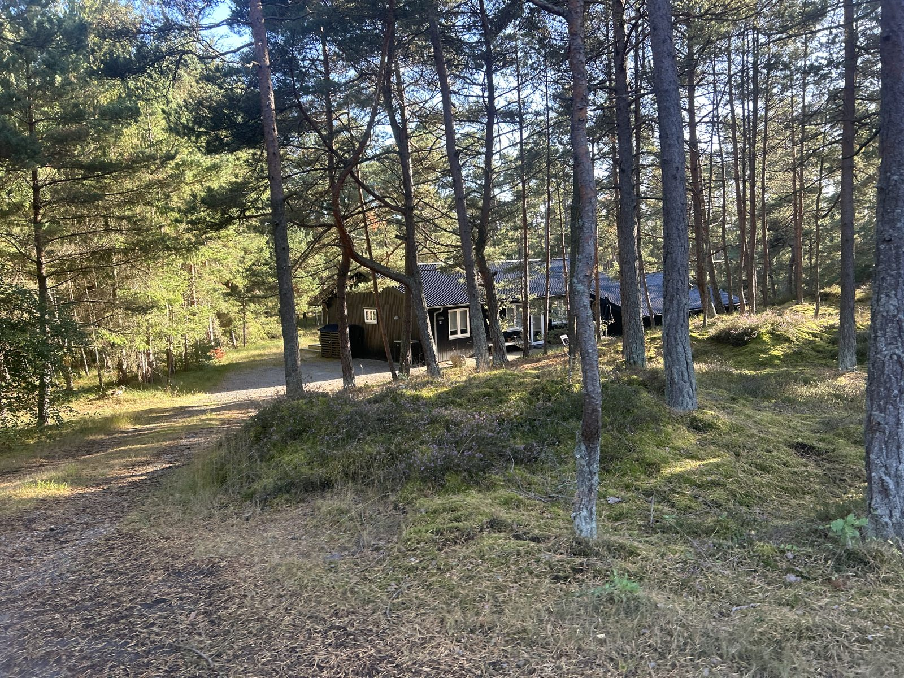
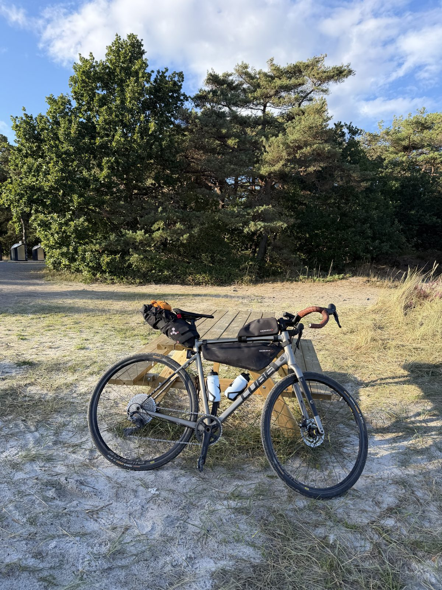
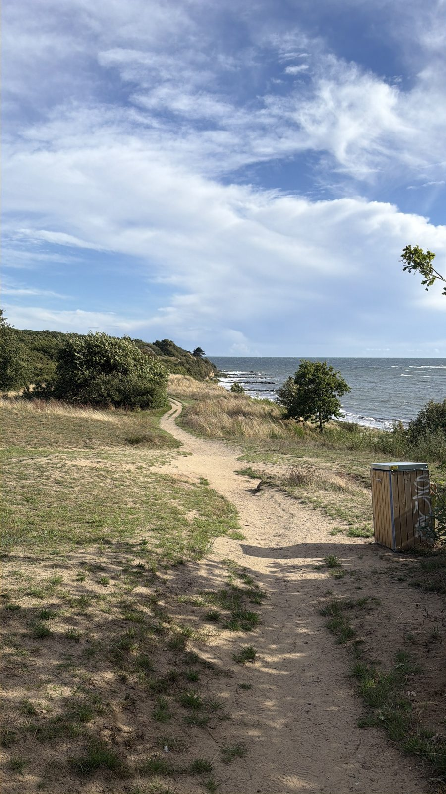
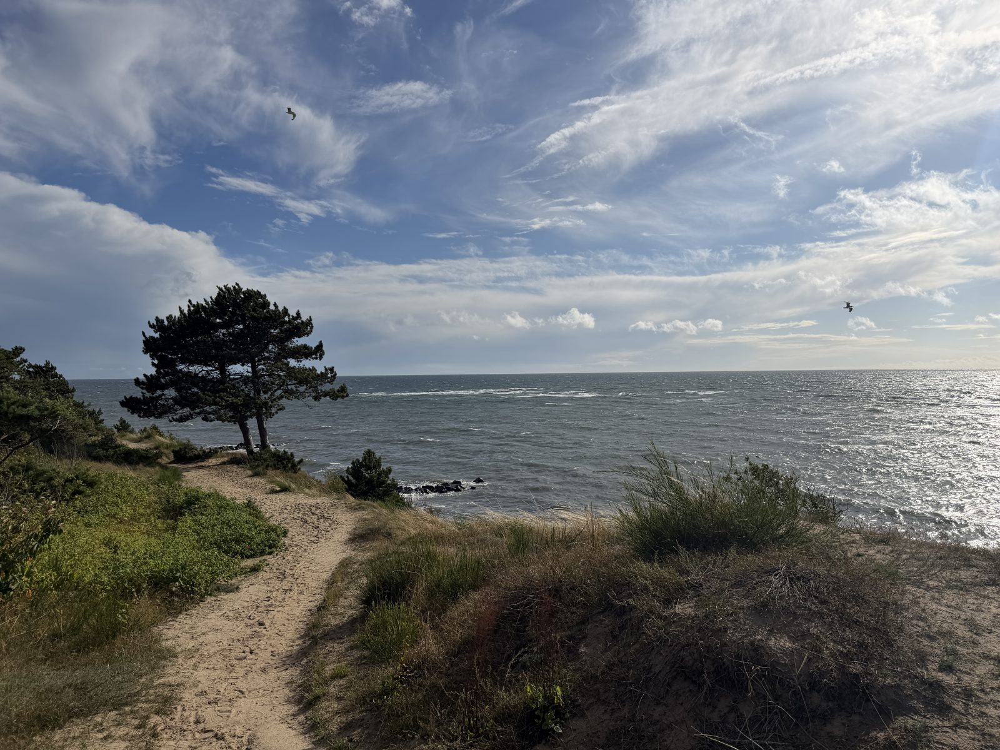
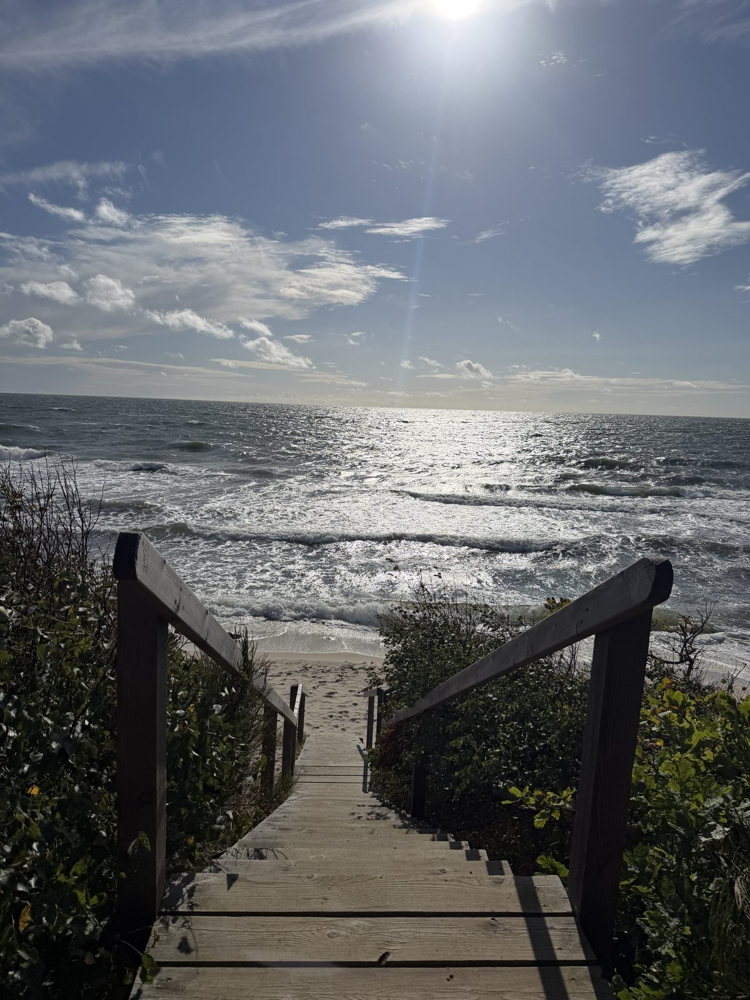
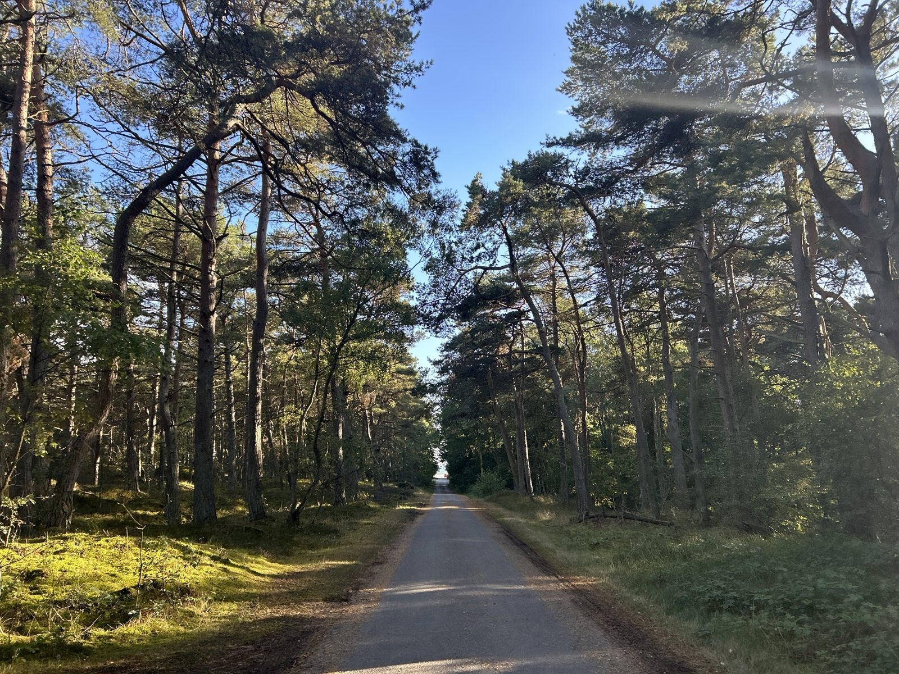
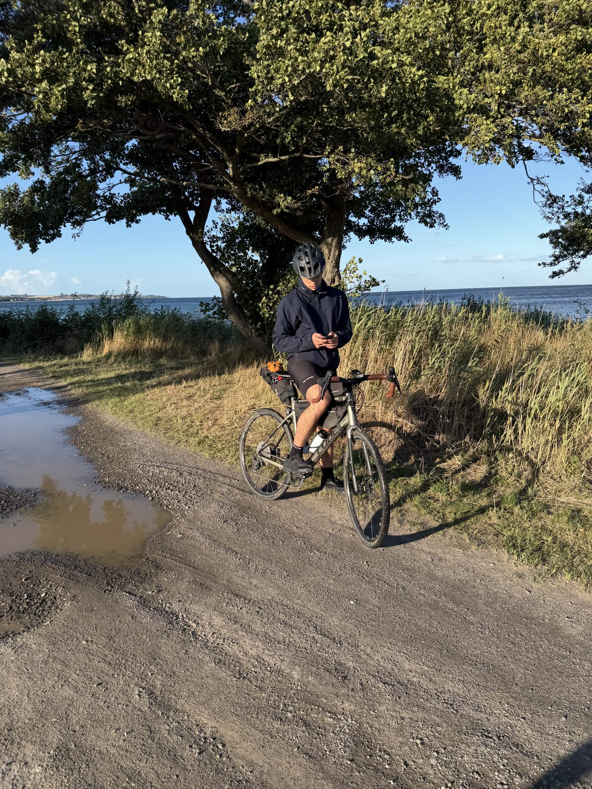